오행 표식과 반응
술법이 맞으면 원귀에 그 오행의 표식이 남고, 다른 오행으로 다시 치면 터진다. 상생이면 키움, 상극이면 깨뜨림이다. 한 번 터진 원귀는 3초 동안 다시 터지지 않으므로, 손이 여러 원귀와 다섯 오행을 돌게 된다. 상생을 끝까지 이으면 오행 신령이 내린다.
부서진 저승길 위에서 구미호 아이가 오행 술법으로 원귀를 풀어 주는 쿼터뷰 액션 로그라이트. 원귀를 없애는 게임이 아니라, 맺힌 한을 풀어 길을 다시 잇는 게임이다.
셋 다 한 가지 생각에서 나온다. 원귀는 미워할 적이 아니라 풀어 줄 넋이다.
술법이 맞으면 원귀에 그 오행의 표식이 남고, 다른 오행으로 다시 치면 터진다. 상생이면 키움, 상극이면 깨뜨림이다. 한 번 터진 원귀는 3초 동안 다시 터지지 않으므로, 손이 여러 원귀와 다섯 오행을 돌게 된다. 상생을 끝까지 이으면 오행 신령이 내린다.
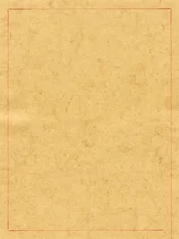
방을 마치면 괴황지에 마우스로 직접 획을 긋는다. 세로선은 목, 물결은 수다. 궁극기인 붓 들기도 바닥에 자유롭게 그린다. 따라 그리는 안내선은 없다. 무가 낱장에 숨은 부적 셋의 그림법이 적혀 있다.
쓰러진 원귀는 사라지지 않고 넋이 풀려 올라간다. 보스는 한의 매듭을 하나씩 풀어야 한다. 정예가 남긴 맺힌 넋은 판 안에서 거두거나 보낸다. 풀어 준 넋은 신당에 모여 사연을 남기고, 굿상에 올라 다음 판을 돕는다.
풀지 못한 한이 쌓여 저승길이 무너졌다. 길 조각은 구름 위 섬이 되었고, 갇힌 넋은 원귀가 되었다. 방 하나가 떠 있는 섬 하나이고, 족자는 섬과 섬을 잇는 그림길이다.
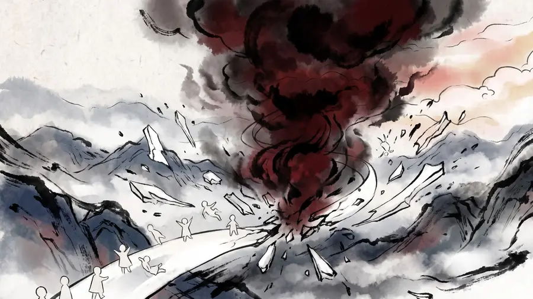
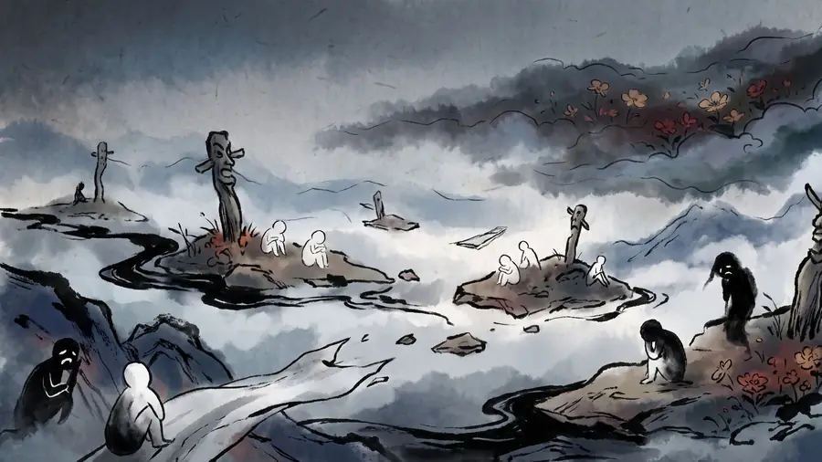
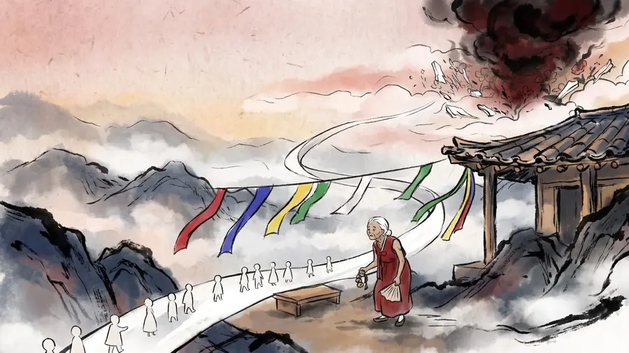
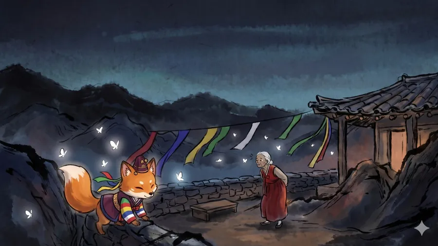
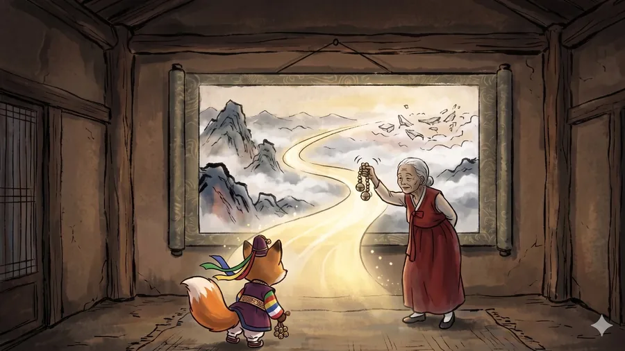
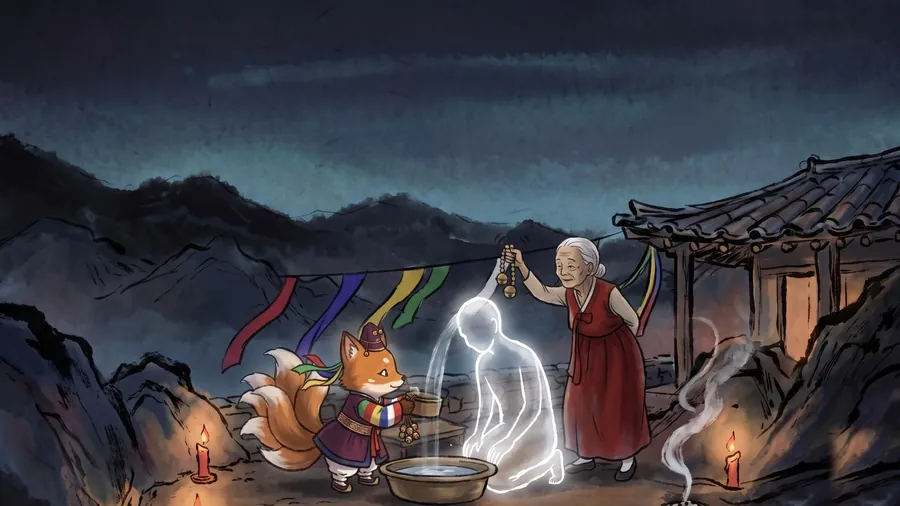
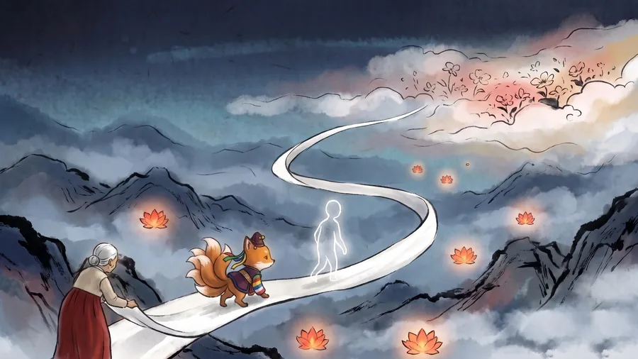
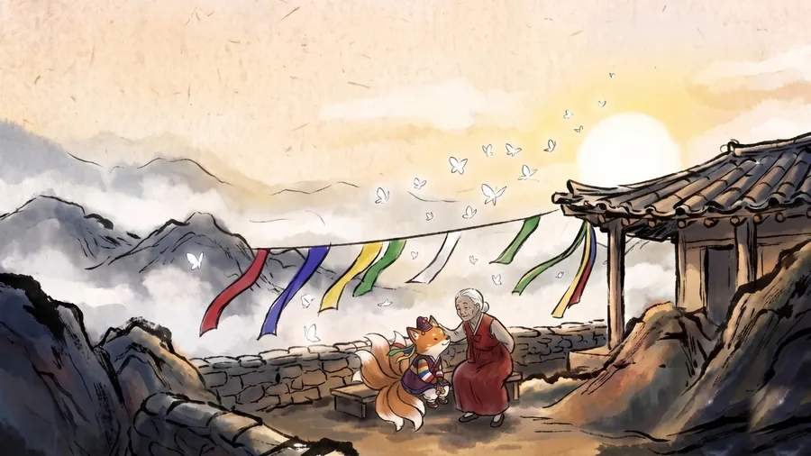
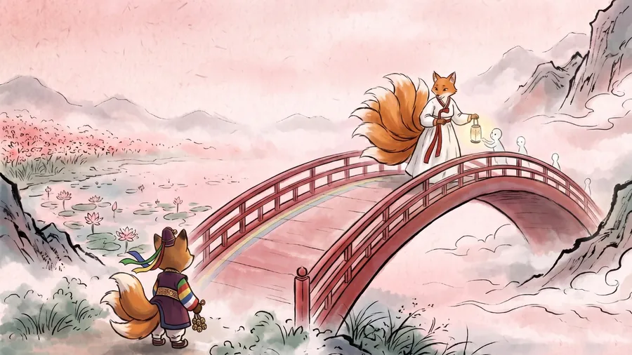
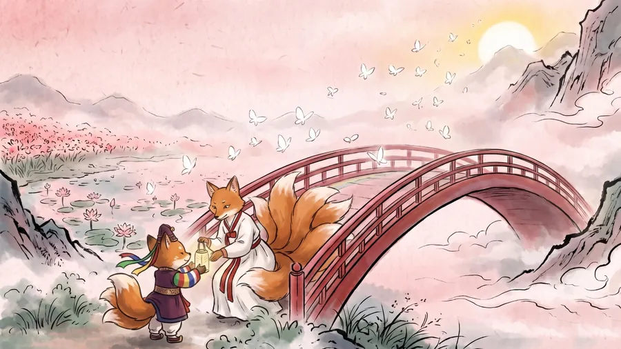
옆으로 넘겨 보기. 컷신은 처음 한 번 나오고, 첫 화면의 '이야기'에서 다시 볼 수 있다. 건너뛸 수도 있다. 다섯째 장부터는 새 2D 주인공으로 다시 그렸다.
주인공. 아홉 꼬리 여우의 피를 이은 꼬마 무당이고, 저승길을 처음 걷는다.
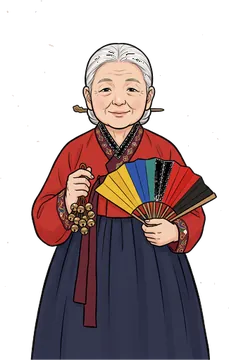
신당의 늙은 무당. 공수를 내리고 장소를 안내한다. 돌아올 때마다 이야기를 한 토막씩 들려주고, 지난 판을 기억해 말을 건다.
무조신. 뒤처진 판의 새 지역 길목에서 먹 꽃을 피우며 솟아, 술법 하나를 북돋아 준다.
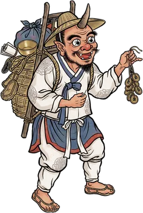
장터의 상인. 엽전을 받고 술법을 팔고 강화한다.
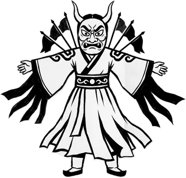
다섯 방위를 지키던 신장. 제를 올리는 이가 없어 서러움이 원한이 되었다.
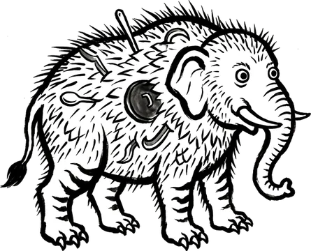
쇠를 먹고 자란 괴물. 배 속에 난리 때 녹인 숟가락과 낫이 들어 있다.
신어머니의 이야기는 열다섯 토막이다. 가 본 지역과 마친 굿 수가 차야 다음 토막이 열리고, 한 판에 한 토막씩 듣는다. 다 들은 뒤에는 실제 판 기록을 기억해 한마디씩 한다.
한 판은 굿 한 판이다. 신당에서 채비하고, 네 지역 20방(4지역 × 5방)과 마지막 굿판을 지나 신당으로 돌아온다. 쓰러져도 번 공덕은 남는다.
마을 끝자락 → 서낭 고갯길 → 저승 문턱. 1번은 연습 방으로, 토 원귀만 나오고 금기가 없다. 고갯길부터 먹 안개가 낀다.
나루 마을 → 강 한가운데 → 건너편 기슭. 강 한가운데에는 물살이 흐른다.
구름 위 저승 관청 섬. 바닥은 잿빛 돌이다. 판 비틀기는 업경대 빛이고, 길가에 판결을 기다리는 줄 선 넋이 선다.
꽃밭 들머리 → 꽃밭 한가운데 → 서천 깊은 곳. 곳곳에 살살이꽃이 핀다.
그 자리에서 보물 셋 중 하나를 고르거나 쉰다. 굿 순서의 덕도 이때 받는다. 그다음 곧바로 다음 지역으로 간다.
지역 산수화 카드에 이름과 한 줄이 뜬다. "건너지 못한 넋이 강가에 쌓인다." 새 지역 첫 방의 첫 무리는 둘 적게 나온다(최소 셋).
둘째 지역부터 새 지역에 들 때 술법 단계 합이 지역 번호 × 2보다 낮으면, 무조신 바리공주가 길 위 먹 꽃에서 솟는다. 술법 넷 가운데 하나를 골라 한 단계 올려 준다.
첫 판이 끝난 뒤부터는 족자에 들기 전에, 이번 굿에 모시지 않을 방위 하나를 오행 고리에서 고른다. 후보는 화를 뺀 넷 가운데 무작위 셋이다. 남은 네 오행이 상생 순서대로 Q · E · F · 우클릭에 앉는다. 오행마다 어느 술법이 들어올지는 판 시드로 정한다. 첫 판은 목·화·토·금으로 고정이다.
원칙보상을 받으면 그 맵은 끝난다. 보상 뒤에 다시 싸움이 이어지지 않는다.
전투·정예·굿판 문에만 붙는다. 막대 길이는 뽑힐 무게다. 한 번 나온 보상은 같은 문 묶음에서 다시 나오지 않는다.
정예 문은 이미 보물을 주므로 보물 도장의 무게가 0이다.
싸움 방(전투·정예)에만 걸린다. 1번 방, 장터, 쉼터, 서낭당, 보스 방에는 없다. 오행 술법이 비틀기를 바꾼다.
먹 안개가 큰 덩이와 섬 모양으로 길을 덮는다. 주인공 둘레 7.5m만 걷히고, 곁에 가서 불을 켠 석등 둘레는 10m가 걷힌다.
화는 꺼진 석등에 불을 붙인다. 금 칼바람은 안개를 가르고, 목 덩굴은 켠 석등 둘레를 넓힌다.
길을 가로지르는 물살이 주인공과 원귀를 떠민다. 강둑까지 밀린 원귀는 휩쓸려 풀린다. 정예는 체력 30%까지만 깎인다.
토 흙둑은 물살을 멈추고, 수는 물살을 거세게 한다.
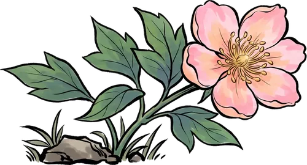
꽃 곁 6.5m 안에서 쓰러진 원귀는 한 번 되살아난다. 먼저 다가가 꺾으면 체력 +8.
화는 꽃과 원귀를 태우고, 목은 시든 자리에 꽃을 다시 피운다. 수는 어디서든 불을 끈다.
옥빛 부채꼴 빛이 훑는다. 빛 안에서는 원귀가 40%, 주인공이 30% 느려지고, 그늘이 걷힌다.
금으로 맞히면 빛이 6초 멈춰 서고, 화는 빛을 늘리고, 수는 5초 동안 끈다.
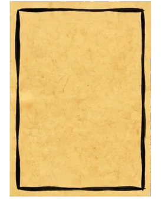
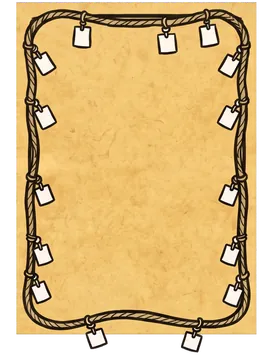
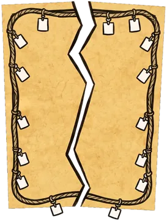
방에 들어서면 신어머니가 공수를 내린다. 카드는 쉬움 하나와 서로 다른 어려움 둘, 모두 셋이다. 1~3으로 받고 4로 거절한다. 받는 순간 守 도장이 찍히고 카드는 화면 위로 날아가 쪽지가 된다. 금기를 어길 때마다 금줄이 한 가닥씩 끊기고, 다 끊기면 깬 것이다.
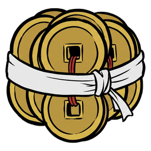
노잣돈에 손대지 마라 (싸우는 동안 엽전이 빨려 오지 않고, 밟으면 끊긴다)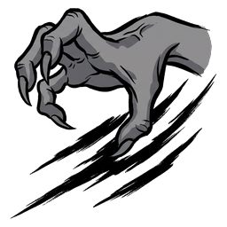
치는 손에 맞지 마라 (원귀가 예고하고 친 공격만 센다)| 받는 부적 획 | 온전히 지킴 | 한 가닥 끊김 | 깸 | 거절 |
|---|---|---|---|---|
| 쉬운 금기 | 3 | — | 1 + 찢김 | 2 |
| 어려운 금기 | 4 + 다음 보물 고르기에 카드 한 장 더 | 2 | 1 + 찢김 | 2 |
찢김은 다음 싸움 방 둘 동안 받는 피해 +30%다. 찢긴 동안 또 깨면 두 방이 늘고, 최대 네 방까지 쌓인다. 엽전 판 옆에 찢긴 부적 조각과 남은 방 수가 보인다. 깨면 거절보다 손해이므로, 받을지 말지가 진짜 선택이 된다.
그 오행 술법 피해 +30%.
획을 목→화→토→금→수 순서로 그린다. 상생 체인 +1초, 신명 +25%.
같은 획만 그린다. 그 오행 재사용 대기 −20%.
획이 상극 순서. 깨뜨림 +0.25.
처음과 끝이 같은 오행, 세 획 이상(일념 제외). 맞으면 그만큼 둘레 원귀에게 되돌린다.
다섯 획이 모두 다른 오행. 모든 술법 피해 +12%, 신명 +15%.
획 수는 금기로 정해지고, 정예 +1, 문 도장 +1, 부정 '마른 붓' −1로 바뀐다. 부적은 세 장까지 붙는다(가망거리 덕이면 네 장). 넘치면 가장 오래된 장이 탄다. 우클릭은 마지막 획을, C는 전부 지운다. 설정에 '그리기 도움'이 있다(기본 꺼짐).
보스의 넋을 물, 쑥물, 향물 순서로 세 번 씻는다. 씻을수록 그림이 밝아진다.
흰 무명천으로 길을 닦는 엔딩 컷신이 나오고, 먹빛 끝 카드에 제목과 한 줄이 뜬다.
풀어 준 원귀, 깨뜨림, 푼 매듭, 시간, 공덕을 정산한다. 오늘의 굿이면 붉은 도장이 찍힌다.
쓰러뜨린 원귀 그림과 신어머니가 알려 주는 피하는 법이 나온다. 방금 번 공덕으로 무엇을 할 수 있는지도 보여 준다.
숨은 끝 굿의 무게 6 이상으로 굿을 마치면, 엔딩 뒤에 서천꽃밭 끝 다리에서 등불을 든 어머니를 만나는 두 장면이 이어진다.
공덕 = (해원 ×1 + 마친 방 ×2 + 마지막 원귀 25 + 씻김 단계 ×5 + 보낸 맺힌 넋 12, 큰 넋 40) × (1 + 0.07 × 굿의 무게).
판은 새 방에 들어설 때마다 저장되고, 첫 화면의 '이어하기'로 돌아온다. 맞을 때마다 저장된 체력도 깎이므로 껐다 켜서 무를 수 없다. 받은 금기와 끊긴 가닥, 찢김, 시드도 그대로 이어진다.
날짜가 시드인 판이다. 누구나 같은 길, 같은 문, 같은 무리를 만난다. 날짜로 정한 오늘의 기운(오행 하나)은 술법 피해 +20%다. 거리 하나와 부정 하나가 저절로 차려진다.
그날 첫 판만 정식으로 기록되고, 그 뒤 판은 연습이다. 굿당에 최근 14일 기록이 남는다. 굿의 무게 기록과 해금에는 영향이 없다.
처음 깨면 붉은 낙관 '成'이 찍히고, 공덕 +100과 부적 종이 한 장을 받는다. 판을 시작할 때 첫 방 이름 띠 밑에 남은 시험이 한 줄로 뜬다.
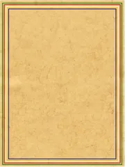
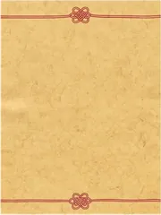
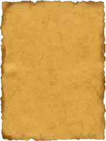
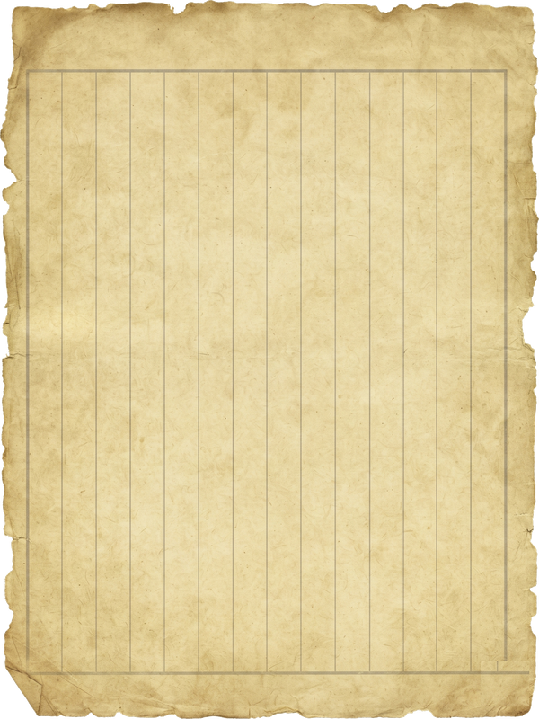
시험을 깨면 받는 부적 종이. 굿당에서 골라 부적을 그릴 때 쓴다(기본은 괴황지).
규칙은 하나다. 맞힌 오행이 표식으로 남고, 다음에 오는 다른 오행이 그 표식과 반응한다. 네 칸의 술법을 번갈아 쓰는 것이 가장 세다.
표식 원귀는 제 오행 표식을 지니고 나온다(사라지지 않음). 술법에 맞으면 그 오행 표식으로 바뀌고, 새 표식은 5초 간다.
깨뜨림 새 오행이 표식을 이기면(상극, 붉은 별) 피해 배율이 붙는다. 배율은 기본 2배(명두면 3배)이고, 당산나무·굿상·신내림·상극 부적의 덤이 곱이 아니라 더해진다.
키움 새 오행이 표식의 상생 다음이면(바깥 고리) 표식마다 다른 효과가 터진다. 쓰러진 뒤에도 터진다.
반응 잠금 3초 반응이 한 번 터지면 그 원귀의 표식이 지워지고, 3초 동안 새 표식이 맺히지 않는다. 큰 원귀는 표식은 남지만 3초 동안 반응하지 않는다. 같은 원귀에 반응을 몰아 터뜨리는 대신, 여러 원귀를 돌아가며 읽게 된다.
그 밖의 조합은 벌칙 없이 표식만 바뀐다. 색은 오방색의 청·흑 대신 한눈에 구별되는 초록·파랑을 쓴다.
반지름 3m 폭발, 피해의 60% (무속성)
쌍 보물: 6m, 120%둘레 3.5m가 3초 느려진다
쌍 보물: 5초 + 1초 묶임그 타격이 1.5배
쌍 보물: 다음 토 술법 대기 절반둘레 3m를 덩굴로 1.5초 묶는다
쌍 보물: 6m, 2.5초신명이 100으로 가득한 채 상생을 더 이으면, 넘친 신명이 그때 얻은 신명의 35%씩 따로 찬다. 넘침이 40이 되면 마지막에 쓴 술법의 오행 신령이 내린다. 상생이 끊기면 넘침은 초당 8씩 빠진다.
신이 내린 8초 동안 모든 술법의 재사용 대기가 두 배 빨리 돌고, 오행마다 다른 선물을 받는다. 신이 떠나면 신병 5초 동안 대시를 못 쓰고 이동이 0.8배로 느려진다.
붓 들기는 넘친 신명까지 함께 쓴다. 신명이 차면 붓을 들지, 더 이어서 신을 받을지 골라야 한다.
술법마다 체력 +2
술법 피해 +30%
받는 피해 −40%
이동 ×1.25, 대시 대기 절반
모든 키는 설정에서 바꿀 수 있다. 패드 코드는 있지만 실제 기기로는 시험하지 않았다.
직전 술법의 상생 다음 오행을 3초 안에 쓰면 체인이 오른다. 체인마다 신명 +15 × 체인(최대 100). 오방기·창부거리 덕·당산나무·굿상이 3초를 늘린다.
술법 피해 = (12 + 4 × (체인 − 1)) × 강화 배율 × 피해 배율
강화 배율 = 1 + 2b/(2+b). b는 그 오행에 쌓인 강화(술법 단계·부적 획마다 0.3)다. 쌓일수록 효율이 줄어 3배에 가까워진다.
시간이 10%로 느려지고 전장이 어두워진다. 3초 동안 먹 40만큼 바닥에 긋는다.
원으로 두르면 안의 원귀를 2.5초 묶고, 선으로 그으면 벤다(피해 45). 그은 붓 획 자체가 금빛으로 빛난다.
한 오행의 강화가 0.9 이상 쌓이면 그 오행을 이기는 사냥꾼 원귀가 더 자주(최대 60%) 나온다. 사냥꾼은 체력 ×1.3이다. 한 오행만 키우는 빌드를 자연스럽게 막는다.
60 × 1.095방−1
방 2는 66, 방 10은 136, 방 20은 336. 여기에 원귀 종류 배율을 곱하고, 정예는 ×1.3이다. 실제 판을 돌려 잰 값으로 맞췄다.
1.2 × (1 + 0.15 × (깊이 − 1))
깊이는 1~5로, 다섯 방마다 하나씩 오른다(방 1~5는 1, 방 20은 5). 원귀의 기본 피해에 깊이 1은 ×1.2, 깊이 5는 ×1.92를 곱한다.
싸우는 중 저절로 차는 회복(이슬, 약초, 산신, 넋 보답 등 일곱 가지)은 방마다 최대 체력의 10%까지만 찬다.
체력 막대의 빈 쪽에 이 방에서 더 찰 몫이 엷은 초록으로 보인다. 굿판·쉼터·서낭당·꽃처럼 골라서 받는 회복은 그릇 밖이다.
난이도는 수가 아니라 한 마리의 무게로 올린다. 한 무리는 3 + 깊이 마리다(첫 지역 4마리 안팎, 마지막 지역 8마리 안팎). 설정의 '받는 피해'로 쉬운 모드를 고를 수 있다.
동물 머리에 작은 무당 몸. 기본 주인공은 구미호이고, 십이지 열두 동물을 하나씩 더해 간다. 사람 무당과 탈 쓴 주인공은 "창의성이 없다"는 판단으로 버렸다.
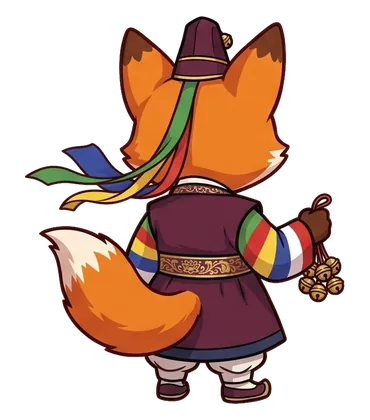
뒷모습진채 무신도 화풍의 2D 구미호(A안). Gemini 한 대화에서 자세 여섯 장(앞·뒤 가만히, 앞 달리기 둘, 뒤 달리기, 술법)을 그렸다. 왼쪽을 볼 때는 좌우를 뒤집는다. 통통 튀기, 기울기, 숨쉬기는 코드로 준다. 3D 공간에 선 그림 판이고, 키 3.2m, 체력 100이다.
예전의 PixelLab 픽셀판과 3D판(TRELLIS)은 고르기 칸에 보관만 해 두었다. 신어머니, 장사꾼, 바리공주, 원귀는 모두 배경과 같은 먹그림이다.
신당의 거울에서 고른다. 아직 없는 십이지는 잠긴 칸으로 보인다. 나머지 열 주인공은 보류 중이다.
보통 원귀 아홉에 지역 원귀 다섯, 지역 보스 셋, 마지막 보스 둘이 있다. 모두 제 그림(기본 자세와 공격 자세)을 갖고 있고, 원귀를 키워서 새 원귀인 척하지 않는다. 그림에 마우스를 올리면 공격 자세가 보인다. 원귀 몸은 모두 흰색이고, 오행은 머리 위 표식과 발밑 원으로만 알린다.
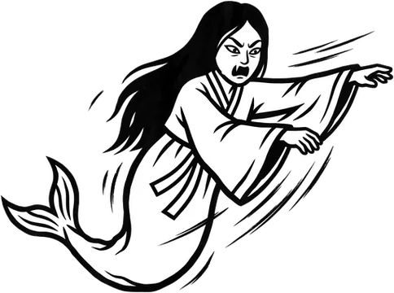
처음부터추격: 곧장 달려들어 덮친다
"길을 잃고 저승 문턱을 맴돌던 넋"
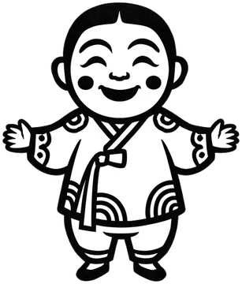
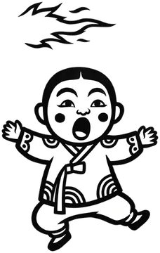
처음부터무리: 작고 빠르고 셋씩 나온다
"굿판 밥을 얻어먹으러 몰려온 잡귀"
돌진: 0.6초 벼르다가 직선으로 돌진한다 (먹 돌진선 예고)
"씨름에 져 분을 못 삭이던 도깨비"
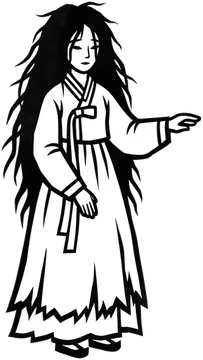
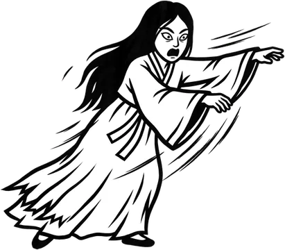
방 6부터사수: 거리를 두고 탄을 쏜다
"혼례를 앞두고 떠난 처녀의 한"
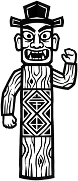
방 11부터탱커: 느리고 단단하다. 반경 2.6m를 내려찍는다
"마을 어귀를 지키다 버려진 장승의 한"
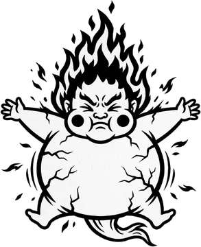
방 11부터자폭: 다가와 0.7초 뒤 터진다 (3m 붓 원 예고)
"불난 집에서 나오지 못한 넋"
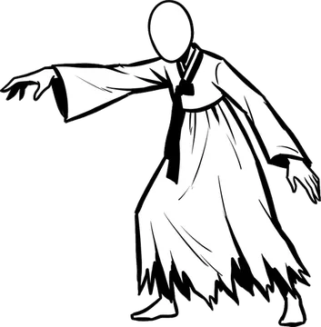
방 11부터순간이동: 붓 원을 남기고 사라졌다가 그 자리에 나타나 할퀸다
"얼굴을 잊어버린 넋"
지원: 멀찍이 서서 둘레 6m 원귀를 그늘로 감싼다 (받는 피해 절반)
"밤길 어둠이 뭉쳐 생긴 넋"
그 지역에서만 나오는 원귀다. 각 지역의 판 비틀기와 맞물리게 만들었다.
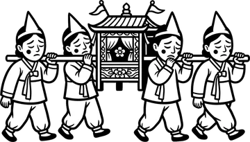
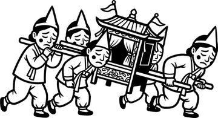
저승 입구 · 방 6부터돌진: 0.9초 크게 벼르다 넓게 돌진한다. 쓰러지면 잡귀 셋이 흩어진다
"상두꾼 넷, 덕보 패"
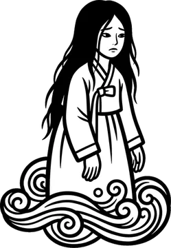
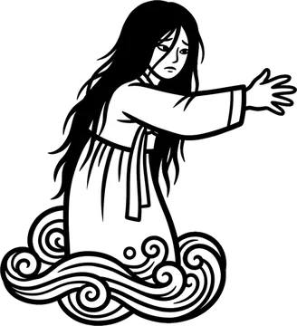
황천강 · 모든 방견인: 6~9m에서 먹선을 긋고, 선 위에 있으면 끌어당긴다
"나룻삯이 없던 순덕이"
꽃 먹기: 살살이꽃부터 먹으러 가고, 꽃이 없으면 덮친다
"빈 바구니 막동이"
막대 눈금은 위 카드와 같다(체력 ×2.6, 속도 5.0, 피해 18이 가득).
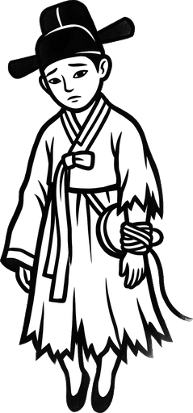
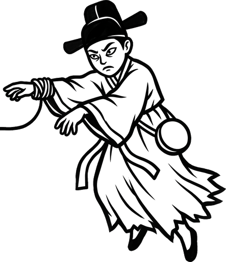
4방부터 · 모든 지역혼례복 총각 넋. 붉은 실로 주인공이 5m 밖으로 못 가게 3초 묶는다. 대시, 몽달에게 한 대, 바라, 흙담이 실을 끊는다
"홍실 한 타래 만석이"
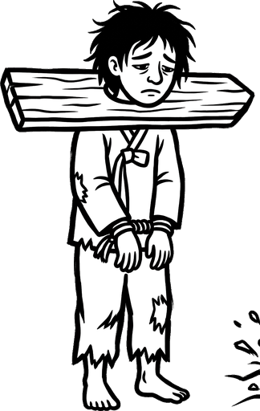
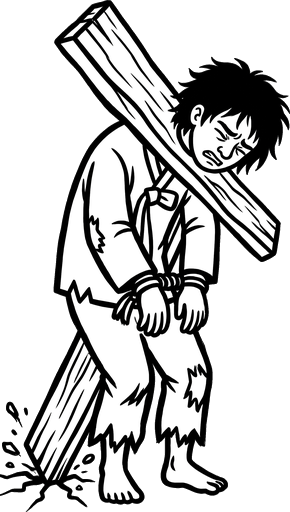
시왕 관문 · 모든 방형틀이 피해를 40%로 막는다. 휘두른 끝에 땅에 박히면 1.2초 동안 피해를 다 받는다. 흙담에 정면으로 부딪혀도 박히고, 깨뜨림 한 번이면 형틀이 갈라진다
"누명 쓴 칠복이"
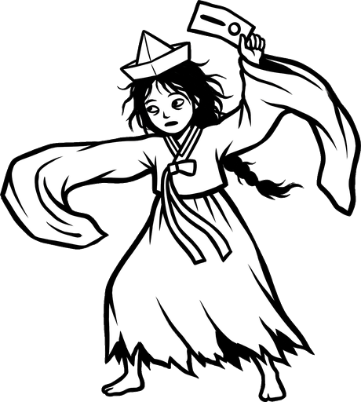
서천꽃밭 · 모든 방거꾸로 부적이 몸에 붙으면 3초 동안 상생 사슬이 이어지지 않는다(술법과 칸은 그대로). 대시로 떨친다
"신어머니를 못 만난 옥분이"
막대: 체력은 방 기본 체력에 곱하는 배율(최대 2.6), 속도는 초속 m(최대 5), 피해는 깊이 배율을 곱하기 전 한 번의 기본 피해(최대 18)다. 원귀 오행은 무작위이고, 게임에서 그 색으로 물든다. 정예 방에서는 더 일찍 나오기도 한다.
속도 +25%, 예고 시간 0.65배
깨뜨리기 전에는 피해 절반
4초마다 잡귀를 불러 모은다 (방 11부터)
깨뜨림으로 풀지 않으면 체력 40%로 한 번 일어난다 (방 11부터)
정예의 모습. 정예는 몸이 1.3배 크다. 수식어마다 소품이 붙는다(붉은 머리띠, 쇳조각 갑옷, 등의 영기, 고풀이 매듭). 몸이 홀쭉한 다섯 종류(달걀귀신·어둑시니·상여꾼·물에 빠진 넋·허주 각시)는 몸에 맞춰 따로 그린 쇠갑옷을 입고, 상여꾼은 상여 몸체에 입는다. 방마다 처음 둘은 붉은 부적 진을 두르고, 발밑 수식어 원에는 먹 밑획이 깔려 어두운 바닥에서도 보인다. 무리마다 수식어 정예가 하나 이상 있다.
맺힌 넋. 수식어 붙은 정예(방마다 하나)나 지역 보스를 풀면 그 자리에 맺힌 넋이 떠 있다. 방을 다 푼 뒤 닿으면 무구에 거두어, 이번 판 동안 그 넋의 보답을 쓴다. 두고 가면 굿판이 필 때 저절로 풀려 가며, 넋 모심 두 몫과 공덕 12(큰 넋은 40)를 남긴다. 정예와 지역 보스는 무가 낱장도 떨어뜨린다.
매듭이 남아 있는 동안 보스는 피해를 35%만 받는다. 깨뜨림 한 번에 매듭 하나가 풀린다.
다 풀리면 5초 동안 멈춰 서서 피해를 2배로 받는다. 그 뒤 매듭 셋이 다시 맺힌다.
들어서면 화면이 먹빛 띠로 닫히고, 거대한 붓 한 획이 보스 그림을 칠해 드러낸다. 징 소리와 함께 이름이 붓글씨로 써지고 붉은 낙관이 찍힌 뒤, 그림이 마르듯 지워지며 보스가 나온다. 공격은 모두 예고가 있다.
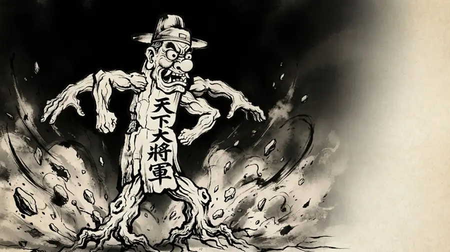
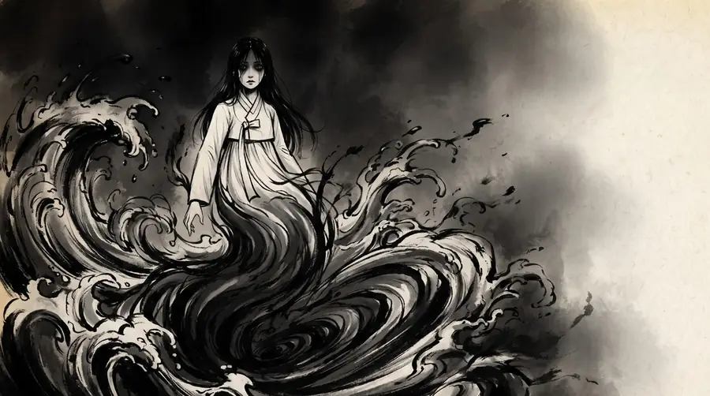
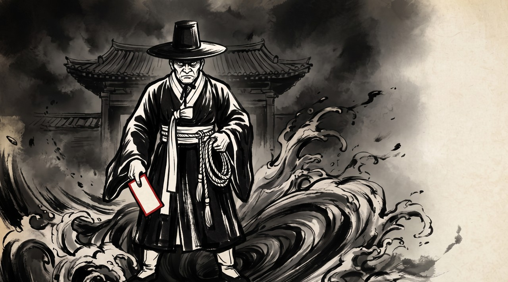
문턱에서 음악이 빠지고 3초 정적, 먼 요령 한 번 뒤에 등장 카드가 나온다. 풀어 보내면 이번 판에 푼 넋 하나의 이름을 읽고, 그 넋이 "예" 하고 걸어 나간다(무가 「이름 부르는 노래」). 넋 보답은 적패지: 원귀 등에 붉은 패가 붙어 받는 피해 +25%.
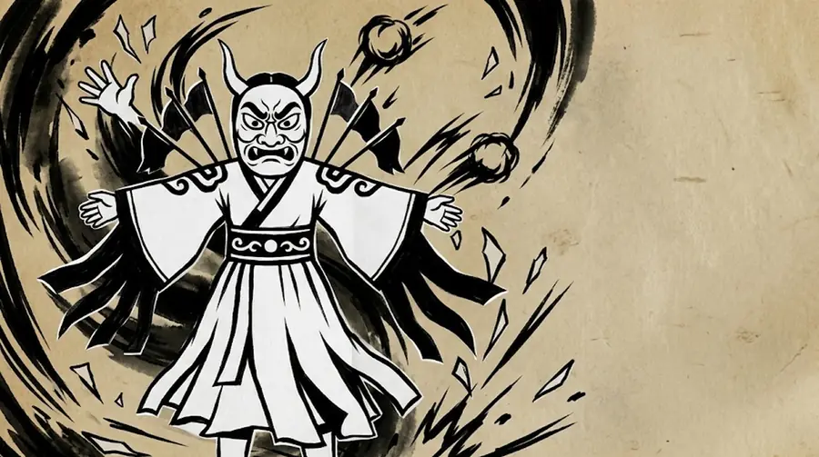
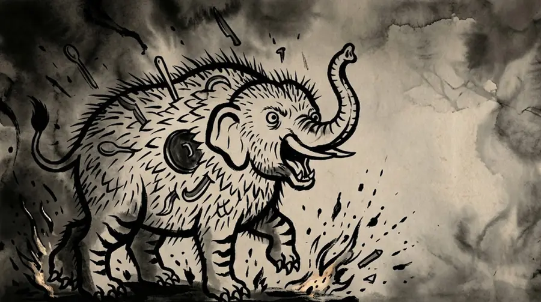
마지막 보스는 판 시드로 정해지고 둘째 방에서 미리 알려 준다. 빌드가 셀수록 체력이 는다. 술법 단계 합마다 +4%, 보물마다 +3%이고, 최대 2.6배다. 부정 '깊은 한'을 걸면 보스 체력이 +30% 더 는다.
한 판 안에서는 술법 네 칸, 부적 세 장, 보물로 강해진다. 술법은 장터에서만 바뀐다. 넋을 주우면 저절로 바뀌던 예전 방식은 플레이테스트에서 싫다는 말을 듣고 없앴다. 술법을 바꿀 때 같은 오행이면 단계를 그대로 잇고, 다른 오행이면 절반(내림)을 잇는다.
첫 판 키트는 목·화·토·금의 첫 술법이다. 그 뒤로는 빠질 방위를 고르고, 남은 네 오행마다 술법 하나를 판 시드로 굴린다(약초 제외). 그래서 수 술법으로 시작할 수도 있다. 새 술법 셋(흙담·바라·썰물)은 시작 키트에서 빼고, 첫 장터에 하나가 꼭 나온다.
보물(무구)은 새 규칙을 더하지 않고, 이미 있는 규칙을 비튼다. 셋 중 하나를 고르고, 뽑힐 무게는 흔함 6, 귀함 3, 신령 1, 오행 쌍 3이다. 오행 쌍은 두 오행 술법을 다 지녔을 때만 후보가 되고, 한 번에 하나까지 나온다. 자리를 강제로 차지하지는 않는다. 센 보물 넷에는 붉은 대가 한 줄이 붙는다. 한 판에 받는 보물은 7개 안팎이다(예전에는 9~17개).
원귀를 풀면 떨어지는 판 안의 돈. 같은 때 가까이서 떨어진 엽전은 큰 단위 한 무더기로 모아 화면이 어지럽지 않게 한다.
튀어 올랐다 통 튀어 앉고, 0.35초 보여 준 뒤 빨려 온다. 연달아 주울수록 소리가 한 음씩 오른다.
| 장터 물건 | 값 (엽전) |
|---|---|
| 술법 하나 사기 (지금 없는 술법 셋 중, 넋전 끈이면 다섯 중 반값) | 40 + 6 × 깊이 |
| 가진 술법 강화 | 25 + 15 × 현재 단계 |
| 체력 35 채우기 (한 번) | 20 |
| 보물 하나 (한 번, 마지막 장터(18방)만) | 80 |
산 술법은 넣을 칸을 고르고, 그 칸의 술법은 사라진다. 불가살이 판인데 화 술법이 없으면 화 술법 하나는 꼭 나온다. 대감거리 청이면 장터 문이 나오지 않고, 성주거리 청이면 체력을 채울 수 없다.
신당은 걸어 다니는 마당이다. 신어머니에게 "어디로 갈까"를 물으면 먹빛이 닫혔다가 그 장소 앞에서 열린다. 마당의 족자로 들어가면 판이 시작된다. 장소는 일곱 곳이다.
마당 한가운데. 공덕을 바쳐 뿌리와 가지에 천을 묶는다
풀어 준 넋 열여덟의 사연과 보답
3×3 상에 제물과 넋을 차린다
굿 순서 · 부정 다짐 · 오늘의 굿 · 시험 (첫 굿을 마친 뒤)
도감 다섯 쪽: 원귀·술법·보물·지난 굿·무가책
주인공 고르기
따로 맵 시험장. 최근 5초 피해량, Tab으로 지역 원귀와 겨룬다
옛 공덕함을 마당 한가운데 큰 나무로 바꿨다. 공덕은 쓰러져도 남는다. 공덕을 바치면 가지에 오색 천이 묶인다. 천을 풀면 공덕을 전부 돌려받으므로 마음껏 실험할 수 있다. 천 다섯 개마다 굿상의 정성 한도가 하나 는다.
오행마다 가지가 하나씩 있고, 마디는 안쪽부터 묶는다. 한 가지 끝까지 1,200, 다섯 가지 모두 6,000 공덕이다. 이긴 판 하나가 공덕 230 안팎을 번다. 갈래가 있는 마디(1·3마디)는 나무 앞에서 언제든 공짜로 바꾼다.
상생이 끊기기까지 1.5초 더
이 오행으로 원귀를 풀면 그 자리가 터진다
이 오행을 쓰면 1초 동안 받는 피해 −40%
이 오행을 쓸 때마다 체력 +2
판에 나가기 전 3×3 상에 제물과 다 풀린 넋을 정성 한도 안에서 차린다. 정성 한도는 5 + 마친 굿 수 + 당산나무 천 수 ÷ 5이고, 최대 12다.
목 피해 +12%
방 마칠 때 체력 +3
화 피해 +12%
잇기 줄 2배
깨기 줄 꺼짐
최대 체력 +12
받는 피해 −15%
엽전 −15%
금 깨뜨림 +0.2
깨기 줄 2배
잇기 줄 꺼짐
수 피해 +12%
대시 대기 −25%
최대 체력 −10
오행마다 첫째 제물은 처음부터 있고, 대가가 붙은 둘째 제물은 굿을 하나씩 마칠 때마다 열린다.
풀어 준 원귀의 넋이 신당 마당에 찾아와 머문다. 다 풀린 넋을 굿상에 올리면 그 판 동안 술법의 모양을 바꾸는 보답이 깃든다(수치 +%가 아니다). 굿상에 오른 넋은 마당 굿상 둘레를 원래 모습으로 떠돈다. 예전의 무구 세 자리(방울·부채·신칼)는 굿상으로 바뀌었다.
큰 원귀는 풀어 준 횟수 1·2·3번. 넋의 정성은 2, 큰 원귀는 3. 싸우는 중 차는 회복형 보답은 회복 그릇(방마다 최대 체력 10%) 안에서만 찬다.
| 넋 | 짝 제물 | 보답 | 이름 있는 사연 | |
|---|---|---|---|---|
| 떠도는 넋 | 나물 | 대시한 자리에 넋불이 남아 둘레를 태운다 | 길 잃은 서동이 | |
| 도깨비 | 막걸리 | 기본 공격 세 번째마다 방망이 내려찍기 | 방망이 임자 두억이 | |
| 처녀귀신 | 삼색 과일 | 방마다 한 번 날아오는 탄을 한숨이 막는다 | 혼례 날을 기다리던 연이 | |
| 잡귀 | 떡 | 원귀를 풀면 잡귀 넋 둘이 튀어나와 친다 | 굿판 밥을 기다리던 덕쇠 패 | |
| 장승귀 | 쌀 한 말 | 방마다 한 번, 체력 30% 밑에서 장승이 1초 지켜 준다 | 마을 어귀 천하대장군 | |
| 불귀신 | 정화수 | 깨뜨림이 일어난 자리가 작게 터진다 | 대장간 막내 불돌이 | |
| 달걀귀신 | 정화수 | 대시 뒤 1초 동안 기본 공격 1.5배 | 얼굴을 잃은 매화 | |
| 어둑시니 | 촛대 | 깨뜨림이 일어나면 둘레 7m 원귀 2초 느려짐 | 등불 없던 고갯길 | |
| 상여꾼 넋 | 향 | 방의 원귀를 다 풀 때마다 요령 소리, 체력 +5 | 상두꾼 넷 덕보 패 | |
| 물에 빠진 넋 | 쌀 한 말 | 깨뜨린 원귀가 물 밑 손에 1초 묶인다 | 나룻삯 없던 순덕이 | |
| 꽃 도둑 | 떡 | 원귀가 떨구는 엽전 +20% | 빈 바구니 막동이 | |
| 오방 원귀 | 촛대 | 상생 다섯 번마다 오방색 파동 | 다섯 방위 신장 | |
| 불가살이 | 놋그릇 | 깨뜨릴 때마다 체력 +3 (회복 그릇 15%) | 쇠를 삼킨 쇠먹이 | |
| 장승 대장군 | 막걸리 | 방에 들어서고 4초 동안 받는 피해 절반 | 저승 들머리 대장군 | |
| 물귀신 | 북어 | 대시할 때 둘레 원귀를 물결로 밀어낸다 | 나루터 뱃사공 강쇠 | |
| 강림도령 | 떡 | 적패지: 방에 들어서면 체력이 가장 많은 원귀 하나에 붉은 패가 붙어 받는 피해 +25% | 이름을 읽지 못한 차사 강림 | |
| 몽달귀신 | 촛대 | 청실홍실: 깨뜨린 원귀와 가장 가까운 원귀를 3초 실로 잇는다. 한쪽이 받는 피해의 절반이 다른 쪽에도 들어간다 | 홍실 한 타래 만석이 | |
| 형틀 쓴 넋 | 정화수 | 벗은 형틀: 깨뜨림을 낸 뒤 1초 동안 받는 피해 −25% | 누명 쓴 칠복이 | |
| 허주 각시 | 향 | 바른 공수: 붉은 실·거꾸로 부적처럼 몸에 붙는 것이 0.5초 짧아진다 | 신어머니를 못 만난 옥분이 |
판에 나가기 전 네 지역에 거리(신령)를 하나씩 모신다. 굿 순서 자리는 넷이다. 신령은 그 지역 내내 청(어려움)을 걸고, 지역을 끝까지 마치면 덕(보상)을 내린다. 빈 자리로 두어도 된다. 하데스의 형벌의 서약을 참고했지만, 핵심은 켜고 끄기가 아니라 놓는 자리다.
네모 개수 = 거리 무게. 마친 굿 가운데 가장 무거운 무게가 새 거리를 연다.
원귀의 예비 동작이 20% 짧다
원귀가 떨구는 엽전 30% 적게
보물을 셋 대신 둘 중에서 고른다
지역 보스·마지막 원귀 체력 +30%
공수를 거절할 수 없다
부적 획 −1 (적어도 한 획)
바리공주가 나오지 않는다
안개가 짙고, 물살이 세고, 살살이꽃이 더 멀리까지 살린다
지역마다 노래 낱장이 두 장씩(시왕 관문은 둘에 이름 부르는 노래를 보너스로 받는다), 모두 아홉 장 있다. 수식어 붙은 정예를 풀면 40%로, 지역 보스를 풀면 반드시 떨어진다(판마다 지역당 한 장). 주우면 화면 위에 한지 카드가 7초 펼쳐지고, 싸움은 멈추지 않는다. 서가의 무가책에서 다시 읽을 수 있다.
화면은 깔끔하게, 연출은 천천히 보이게. 비슷한 것은 같은 규칙으로 놓고, 꼭 필요하지 않은 안내 글은 버린다.
조작법 줄, 남은 무리 수, "숫자 키로 고른다" 같은 안내는 뺀다. 처음 보는 말만 한 번 짧게 설명한다. 공수, 부적, 일시정지, 쓰러짐 화면에서는 HUD를 숨긴다.
이름표는 늘 제 족자 위에 둔다. 같은 일을 하는 판은 같은 틀을 쓴다. 신당의 네 판(당산나무, 굿당, 굿상, 넋 제단)은 모두 그림 판이다.
화면 검사(Audit)가 모든 상태를 두 해상도(1280×800, 1024×768)로 찍는다. 글 넘침, 겹침, 잘림, 빽빽함을 본다. 좁은 화면에서는 판을 통째로 줄이고, 한글은 띄어쓰기에서만 줄을 바꾼다. "뜨기만 하면" 통과가 아니다.
족자는 0.7초에 걸쳐 위에서 아래로 펼쳐진다. 이름 띠가 다 펼쳐진 뒤에 원귀와 보스가 나온다. 화면이 "휙휙" 바뀌지 않는다.
화면 위에 덧칠한 빛 구슬이나 네온 막대 대신, 먹과 붓 그림 자체가 빛나고 번진다. 금기 쪽지, 찢긴 부적, 守·破 도장도 모두 그림이다.
화면 전체에 씌운 한지 필터는 "보기 불편"해서 뺐다.
| 전체 소리 · 음악 · 효과음 | 크기 조절, M으로 잠깐 끄기 |
| 흔들림·번쩍임 | 화면 흔들림과 흰·붉은 번쩍임을 함께 줄인다 |
| 받는 피해 | 쉬운 모드, 20%까지 (벌칙 없음) |
| 화면 | 전체 화면 · 창 |
| 그리기 도움 | 부적 획을 반듯하게 (기본 꺼짐) |
| 판 시계 · 글씨 크기 | 한 판 시간 표시 · 100% / 110% |
| 키 바꾸기 | 열두 동작. 이미 쓰는 키를 고르면 서로 바뀐다 |
| 타격 멈춤 | 줄은 남았지만, 맞을 때의 타격 멈춤을 뺐으므로 지금은 아무 일도 하지 않는다 |
화풍은 한지 위에 먹으로 그린 민화가 움직이는 것이다. 굵은 먹선에 납작한 채색을 쓰고, 배경부터 UI까지 한 화면이 한 그림처럼 맞아야 한다. 그림과 소리는 다른 AI가 만든 진짜 자산을 쓰고, 코드로 그린 그림과 합성음은 쓰지 않는다.

안개 산 위에 뜬 고갯길. 길 밖은 허공이고, 장승과 석등이 길을 지킨다.
집터(초가·장독대·우물), 논과 원두막, 개울가 물레방아, 묘역, 서낭터, 길목을 가로지르는 홍살문
물 위의 땅. 길 밖은 화면 끝까지 모두 검은 강물이고, 바닥은 젖은 모래둑이다. 강물은 강둑 3m 뒤에서 산수화 속으로 녹아든다.
물 위에는 배·난파선·징검다리·연잎·말뚝, 물가에는 덧붙인 집터 위의 집·빨래터·용왕당
하늘에 핀 꽃섬. 꽃잎처럼 부푼 들판에 살살이꽃이 핀다.
연못과 붉은 다리, 탑 마당, 곶 위의 정자·누각, 월문 정원, 그네 나무, 부도
구름 위 저승 관청 섬. 길가에 판결을 기다리는 줄 선 넋이 서고, 방마다 줄이 줄어든다(12·9·6·2·0).
돌 등롱, 향나무, 기와, 시왕 번, 품계석, 관청 담, 솟을대문, 명부 서고, 사잣밥 상
방은 둥근 덩어리를 이어 만든 굽은 길이다(보스방만 둥글다). 지역마다 방 모양은 여덟 개이고, 초입·한가운데·끝 세 구간을 따라 구조물이 바뀐다. 소품은 저마다 제 터(집터, 물가, 길목)에 선다.
| 배경 음악 4곡 | 쉼터·보스·신당·전투, 1.5초 교차 | Lyria |
| 지역 전투곡 3 | 저승 입구·황천강·서천꽃밭 | Stable Audio 3 |
| 지역 환경음 3 · 여울 | 지역마다 깔리는 소리, 물살 곁에서 가까울수록 커지는 물소리 | Stable Audio 3 |
| 장구 장단 | 전투 중 굿거리·휘모리 고리 | Lyria |
| 효과음 24 | 장구·북·꽹과리·징·방울·바라, 술법, 타격, 깨뜨림, 찢는 소리 | Lyria · Stable Audio 3 |
지역 전투곡은 Gemini 음악이 세 번 실패해서 Stable Audio로 만들었다.
Unity 한 프로젝트에서 장면 편집 없이 코드가 런타임에 모든 것을 짓는다. 게임 코드는 약 17,700줄(56파일)이고, 편집기 코드 1,300줄이 따로 있다.
| 파일 | 맡은 일 |
|---|---|
| Game.cs + partial 열(Rites · Rooms · Haewon · Ending · Hub · Menu · Brush · Gui · Auto · AutoR3) | 판 흐름 전체: 방, 무리, 공수, 문, 부적, 보물, 맺힌 넋, 씻김, 신당, 붓 들기, 자동 시험 |
| Maps.cs · Ground.cs · Twist.cs | 방 종류·문 보상·방 모양(SDF 덩어리)·지역 구간 / 바닥·소품·구조물·산수화 / 판 비틀기와 오행 반응 |
| Player.cs · HeroBody.cs · Heroes.cs · HeroSelect.cs · Kit.cs | 조작·피해·술법·신내림·회복 그릇 / 몸과 동작 / 주인공 목록·고르기 / 빠질 방위 |
| Enemy.cs · Boss.cs · Warden.cs | 원귀(예고·공격 토큰·표식·반응 잠금·수식어·매듭) / 마지막 보스 / 지역 보스 |
| Soul.cs · Ohaeng.cs · InkSpell.cs · Rites.cs · Muga.cs | 술법 / 오행 규칙 / 붓 획 술법 / 금기 값 표·금줄·부적 획 인식 / 무가 낱장 |
| Treasure.cs · Coin.cs · Shop.cs | 보물 / 엽전 / 장터 |
| Meta.cs · Dangsan.cs · UnlockBoard.cs · Gutsang.cs · GutsangBoard.cs | 공덕·해금·대사·신어머니 기억 / 당산나무 / 굿상 |
| Spirits.cs · SpiritBoard.cs · Geori.cs · Challenge.cs · Codex.cs | 넋 모심 / 굿 순서·부정 다짐 / 오늘의 굿·시험 / 도감 |
| Hud.cs · HudUi.cs · Ui.cs · Cutscene.cs · Audit.cs | OnGUI 판 / 전투 HUD(uGUI) / 공용 그리기·한글 줄바꿈 / 컷신 / 화면 검사 |
| Sfx.cs · Look.cs · Settings.cs · RunSave.cs · RunLog.cs | 소리 / 후처리 / 설정 / 방 단위 저장 / 판 기록 |
판 밖 기록(공덕, 당산나무, 넋, 굿상, 거리, 도감, 시험, 설정)은 PlayerPrefs에 둔다. 판 안은 새 방마다, 그리고 맞을 때마다 JSON으로 저장한다. 금기, 찢김, 시드, 받은 덕까지 함께 저장해서 이어하기로 무를 수 없다. 판마다 시드가 있어 -seed N으로 같은 판을 다시 본다. 판 기록 runs.jsonl은 밸런스 조정에 쓴다.
Setup.Run에 검사가 있다(오행 규칙, 방 길 이어짐 BFS, 발 높이 등). 빌드한 게임을 인자로 돌리는 자동 시험이 있고(-autorun, -autowarden, -autosave, -audit, -runlog, -fp …), -autoscreen 화면 이름은 89가지다. Tests/main.sh는 13가지(-auto 열 가지 + 해원·구제·연습 길 셋), daily.sh는 같은 시드 두 판 비교, audit.sh는 화면 18개 × 해상도 2개 = 36번 검사한다. 시험은 줄이지 않고 늘리며, 버그는 실패하는 시험부터 쓴다.
방 30개를 도는 동안(-autoscreen mem) 메모리는 10월 18일 고친 뒤 114~117MB였고, 열 번째 방 뒤로 120MB 넘게 늘면 시험이 실패한다. 이후 시험에서는 늘어남이 0MB다. 그림 폴더는 1.48GB에서 0.68GB로 줄였다(손실 압축은 PSNR 38dB 이상인 그림만).
신당에서 20방과 마지막 굿판을 지나 엔딩까지 한 판 전체를 할 수 있다. 10월 20일 심층 토론의 최종안(반응 잠금, 깨뜨림 덧셈, 체력 곡선, 회복 그릇, 금기 값 표, 빠질 방위)까지 들어갔다. 남은 일은 사람이 직접 해 보고 판단하는 것이다.
평가자 여섯, 개발자 변호인, 심사위원장이 다섯 라운드를 거쳐 57/100(지금 단계), 54/100(상용)을 매겼다. 사람이 해 본 판이 없는 상태에서 낸 점수다. 합의된 비판은 셋이다.
출시 관련 일(영어 번역, 스팀 페이지, 마케팅, 데모·축제 준비)은 노트북에서 할 수 있는 것을 다 마친 뒤 직접 한다. 협동 플레이, 유료 요금제 도구, Hunyuan3D(라이선스에서 한국이 빠짐)도 쓰지 않는다.
고증보다 지금 사람이 알아보기 쉽고 보기 좋은 쪽을 고른다.
참고 게임은 원하는 효과의 예일 뿐이다. 넋굿의 것으로 새로 만든다.
난이도는 한 마리의 무게로 올린다. 화면에 뜨는 수보다 질이다.
보상을 받으면 그 맵은 끝난다.
새 원귀와 보물은 그날 바로 넋 모심, 도감, 대사, 검사에 연결한다.
"됐다"는 화면으로 확인한 뒤에만 말한다.
Claude가 눈과 귀로 판정할 수 없어 사람의 판단을 기다리는 것을 모았다. 항목마다 맨 아래 줄이 답하는 법이다. 새 항목은 이 절에 계속 더한다.
지금 게임에 들어간 얼굴 둘은 눈동자만 없앤 흰 빈 눈이다. 손 둘, 맺힌 고 둘, 넋전, 무명 천 줄은 첫날 그림이고, 처음 시안 둘은 비교용이다. 천고 시안은 따로 보기에도 있다.
답하기"얼굴 괜찮다 / 넋전 다시 그려 / 「그 겨울 밤」 바퀴 지워 / 배경 문 더 크게 / 이대로 넣어"
인벤 「게임 역사상 가장 뛰어난 트레일러 TOP15」를 보고 기능 나열형 v1(보기)을 버렸다. v2는 목소리 하나가 끌고 가는 이야기 한 편이다. 신어머니가 여우에게 하는 말인 줄 알았는데, 끝의 "만수야." 한 마디에 그 말이 천고(옛날 놓친 넋)를 향한 것이었음이 드러난다. 화면 글은 대사 일곱 줄과 끝 제목뿐, HUD 없음. 음악은 그대로.
답하기"대사 ○번 바꿔 / 목소리 없이 자막만 / 좋다"
Claude는 소리를 듣지 못해 파일과 코드로만 쟀다. 아래 열두 가지는 사람 귀가 필요하다. 가장 급한 것은 엽전과 먼 요령이다.
답하기"엽전 괜찮다 / 날카롭다, 빼 / 요령은 ○○처럼" 처럼 이름만 말하면 된다.
그림·화풍 검사 결과다. 흠이 뚜렷해 반드시 고칠 그림은 없다. 다만 아래 둘은 다시 그릴지 정해야 한다.
답하기"정예 3·6 다시 그려 / 그대로 둬 / 넋전만 다시"